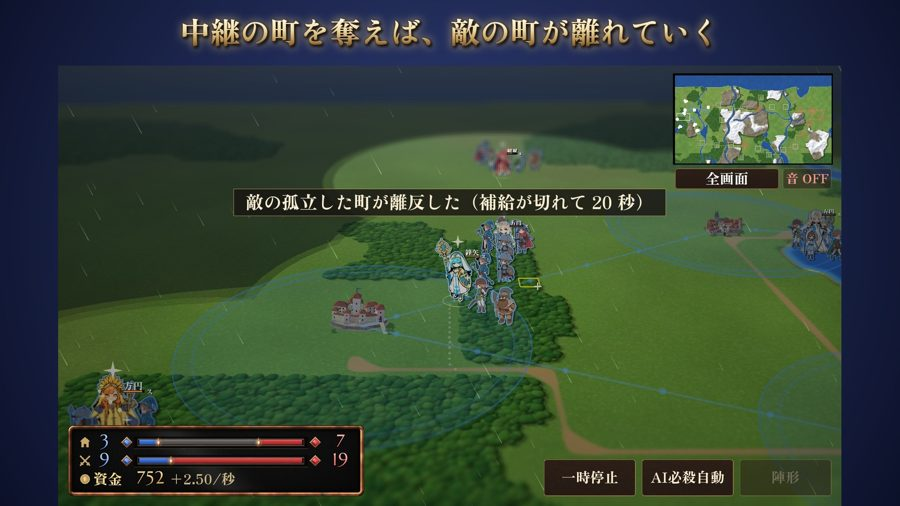
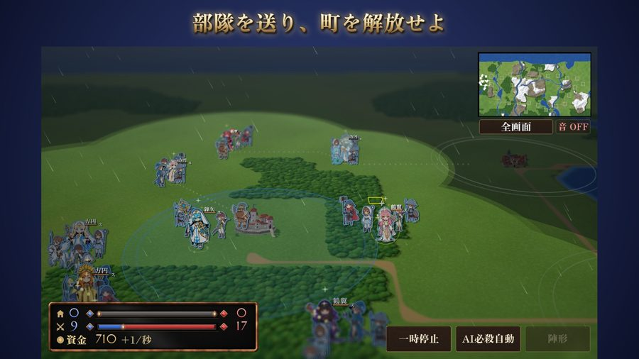
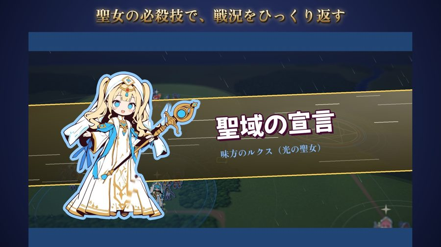
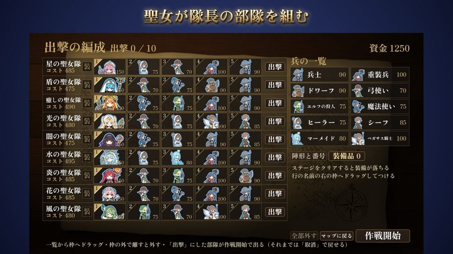
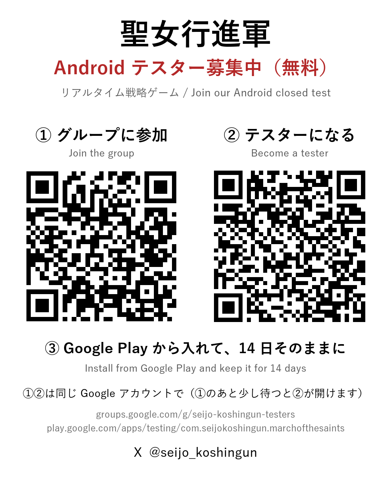

聖女行進軍 The March of the Saints
10部隊が入り乱れる戦場で、聖女たちの必殺技で戦局をひっくり返す、リアルタイム戦略ゲームです。
A real-time strategy game where ten squads clash on one battlefield and the Saints' special moves turn the tide.
Android テスター募集中（全章無料）
Android testers wanted (all chapters free)
- 「テスターになる」を押す（①と同じ Google アカウントで）
Tap "Become a tester" (same Google account as step 1)
テスターになる / Become a tester - Google Play から入れて、14 日間そのままにしてください。ときどき遊んでもらえるとうれしいです。
Install from Google Play and keep it for 14 days. Playing now and then is very welcome!
Google Play で開く / Open in Google Play
アプリが出てこないとき：Play ストアのアカウントが①と同じかを確かめてください。参加の直後は数分かかることがあります。
Can't find the app? Make sure your Play Store account is the one you joined with. It can take a few minutes after joining.
相互テスト歓迎です（X で声をかけてください）。Test-for-test welcome — ping us on X.
ゲームの様子 Screenshots




ご意見・不具合のご報告 Feedback
感想・ご要望・不具合など、ひとことでも気軽にお送りください。お名前やメールは要りません。
Any comment is welcome, even one line. No name or email needed.
最新情報 Follow us
QR コード QR codes

このゲームについて About
ひとりで作っている個人開発のゲームです。Android は 12 月に無料で公開予定（広告あり・400 円で広告を消せます）、そのあと Steam で出します。
ゲームの絵と曲の一部に生成 AI を使っています。
Made solo. Coming to Android in December, free to play with ads (a one-time purchase removes them), then to Steam. Some art and music were made with generative AI.